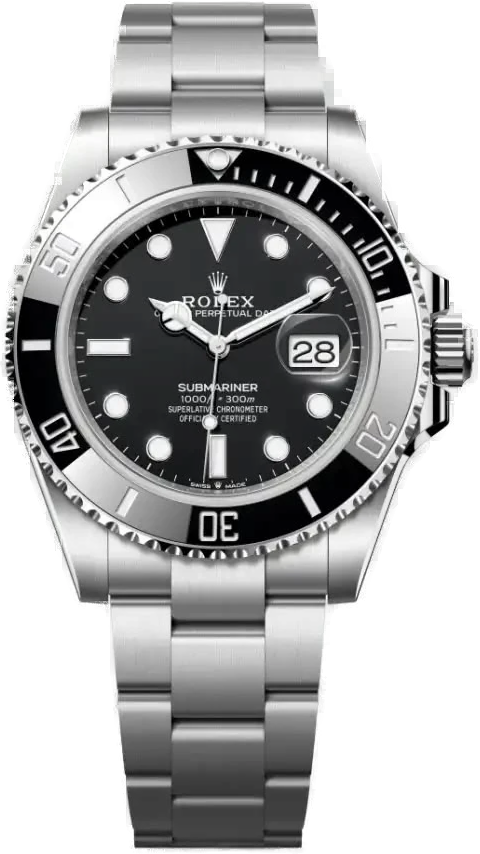

CERAMIC
BEZEL
Cerachrom: rayaduras imposibles, color que no se apaga.

MODEL 126610LN
SCROLL
Cerachrom: rayaduras imposibles, color que no se apaga.
Corona Triplock. Hermético hasta 1 000 pies de profundidad.
Caja, bisel, esfera y mecanismo: cada capa, una sola pieza.
Calibre 3235. 70 horas de reserva de marcha.
Acero 904L, eslabones macizos y extensión Glidelock.
Cronómetro superlativo, certificado oficialmente.